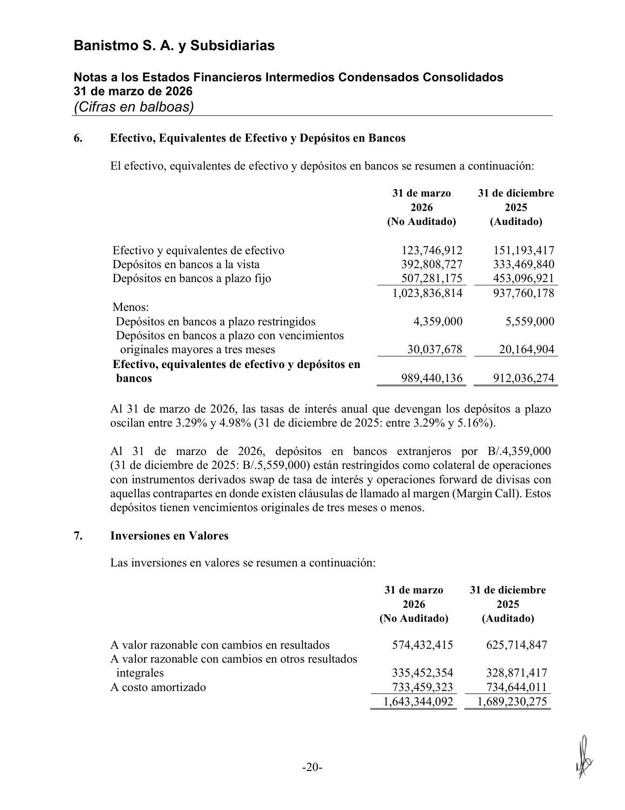
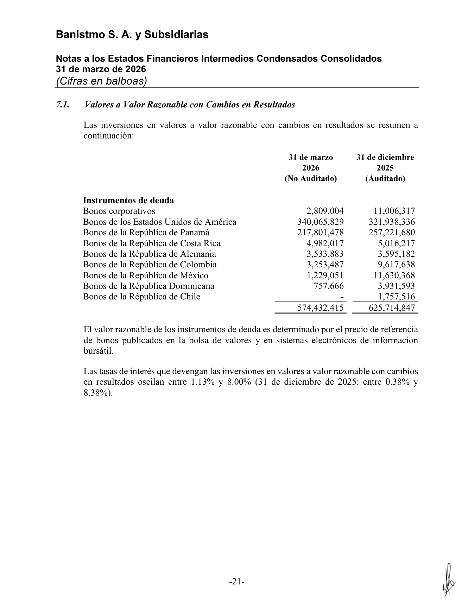
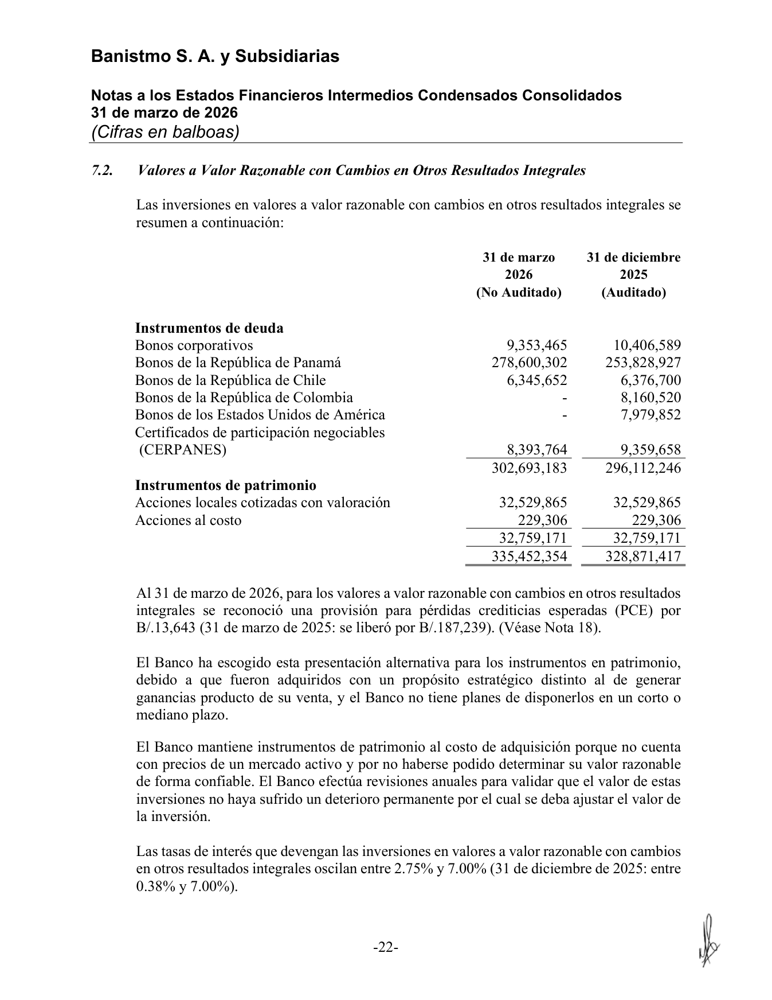
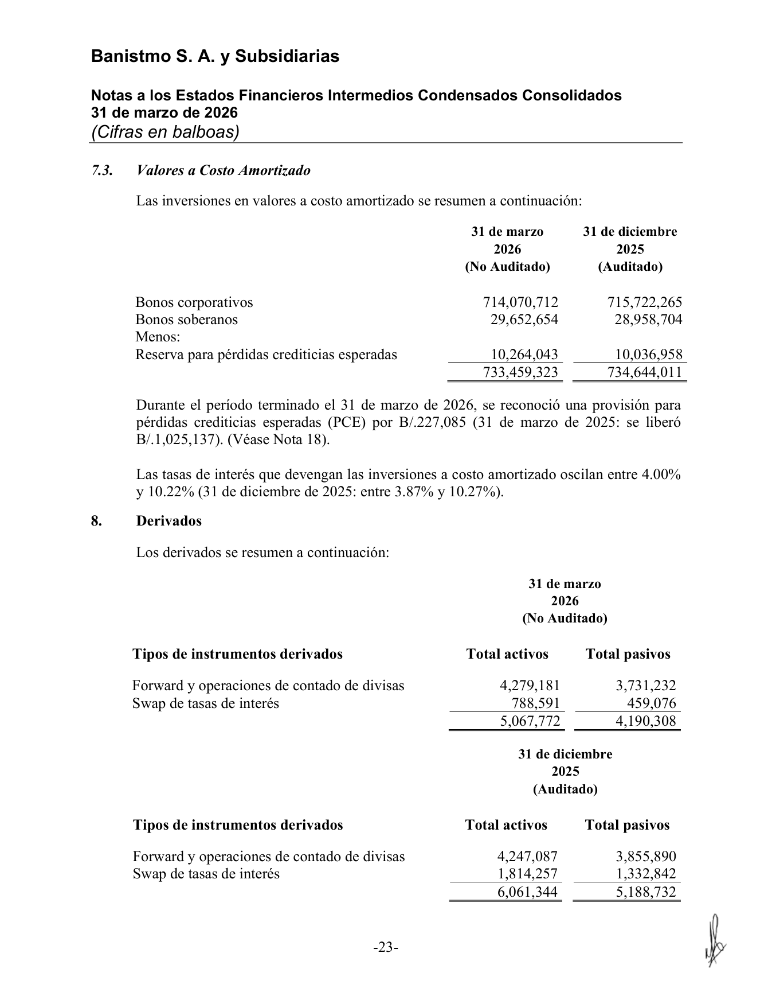
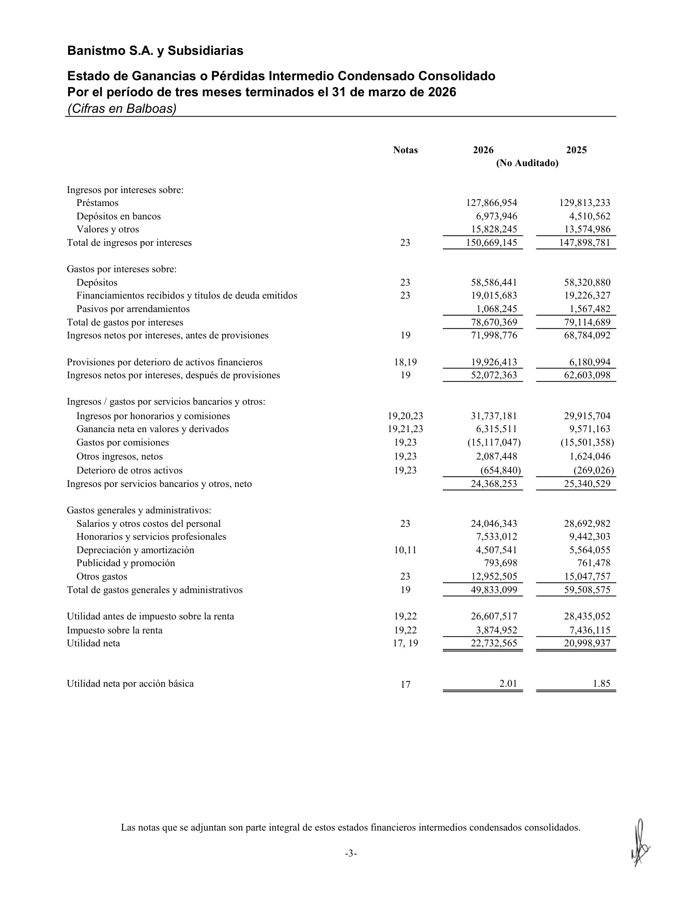
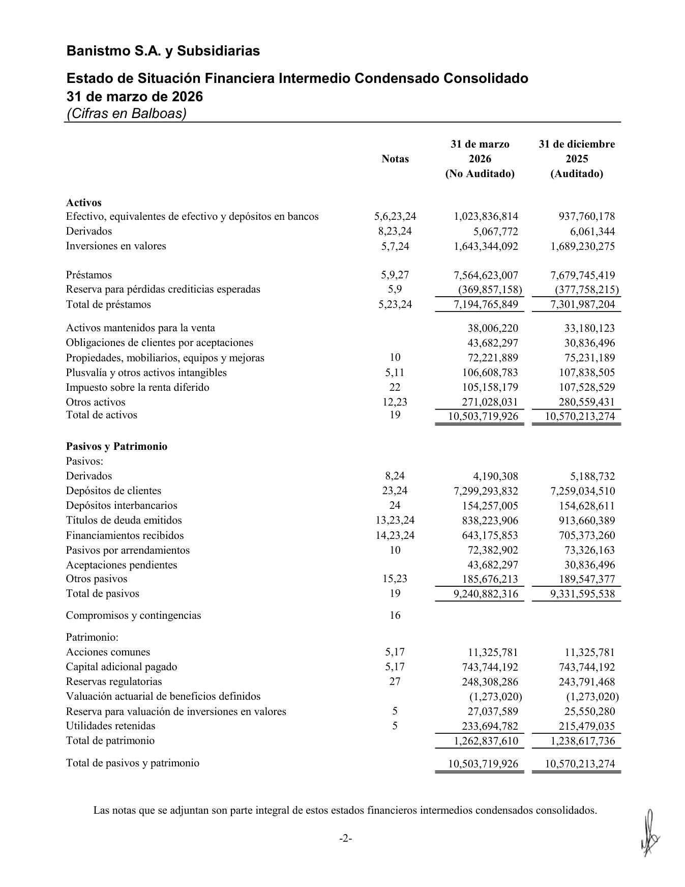
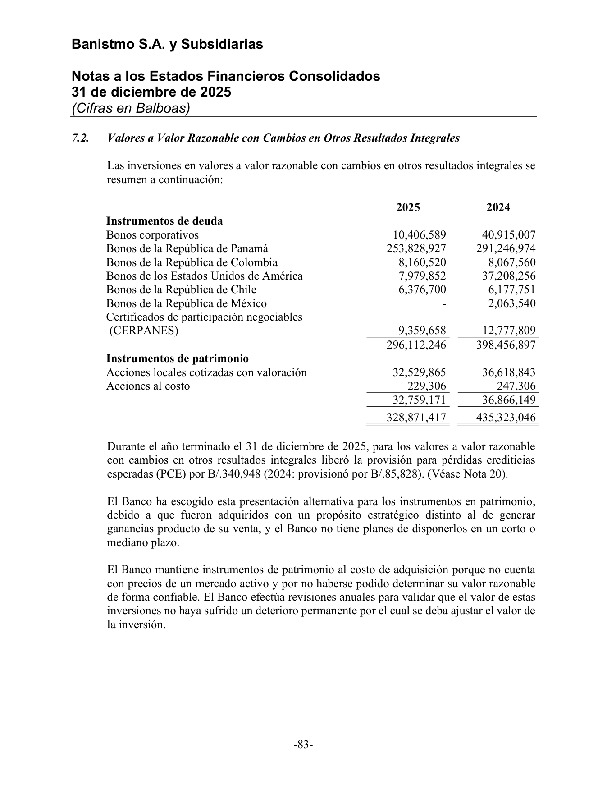
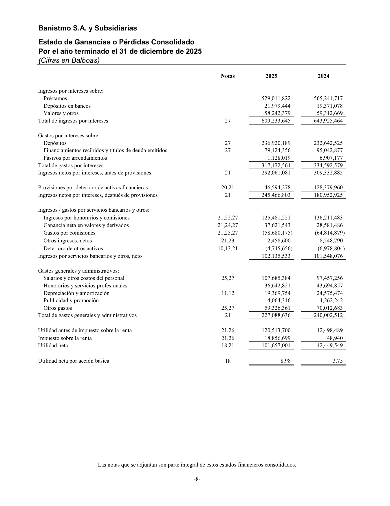

<title>Banistmo — Inversiones en Valores: evidencia renta fija (ex-acciones)</title>
<meta name="viewport" content="width=device-width, initial-scale=1">
<style>
:root{
  --plane:#eef1f5; --surface:#f8f9fb; --surface-2:#ffffff;
  --ink:#0f1620; --ink-2:#475062; --muted:#8a91a0; --hair:#dde2ea; --hair-2:#c7cedb;
  --accent:#2a78d6; --accent-soft:#e7f0fc;
  --s1:#2a78d6; --s2:#1baf7a; --s6:#e34948;
  --good:#0a8a3a; --warn:#b8770a; --crit:#c0392b;
  --good-bg:#e4f4ea; --warn-bg:#fbf1dc; --crit-bg:#fae5e2; --info-bg:#e7f0fc;
  --shadow:0 1px 2px rgba(15,22,32,.04),0 8px 24px rgba(15,22,32,.06);
  --mono:ui-monospace,"SF Mono","SFMono-Regular",Menlo,Consolas,monospace;
  --sans:system-ui,-apple-system,"Segoe UI",Roboto,sans-serif;
}
@media (prefers-color-scheme:dark){
  :root{
    --plane:#0a0c10; --surface:#12161d; --surface-2:#171c25;
    --ink:#f2f5fa; --ink-2:#a8b0c0; --muted:#6b7382; --hair:#242a34; --hair-2:#2f3744;
    --accent:#4a90e2; --accent-soft:#16273c;
    --s1:#3987e5; --s2:#199e70; --s6:#e66767;
    --good:#3bbf6a; --warn:#e0a52c; --crit:#e8756a;
    --good-bg:#12291b; --warn-bg:#2a2210; --crit-bg:#2c1815; --info-bg:#16273c;
    --shadow:0 1px 2px rgba(0,0,0,.3),0 10px 30px rgba(0,0,0,.4);
  }
}
:root[data-theme="dark"]{
  --plane:#0a0c10; --surface:#12161d; --surface-2:#171c25;
  --ink:#f2f5fa; --ink-2:#a8b0c0; --muted:#6b7382; --hair:#242a34; --hair-2:#2f3744;
  --accent:#4a90e2; --accent-soft:#16273c;
  --s1:#3987e5; --s2:#199e70; --s6:#e66767;
  --good:#3bbf6a; --warn:#e0a52c; --crit:#e8756a;
  --good-bg:#12291b; --warn-bg:#2a2210; --crit-bg:#2c1815; --info-bg:#16273c;
}
:root[data-theme="light"]{
  --plane:#eef1f5; --surface:#f8f9fb; --surface-2:#ffffff;
  --ink:#0f1620; --ink-2:#475062; --muted:#8a91a0; --hair:#dde2ea; --hair-2:#c7cedb;
  --accent:#2a78d6; --accent-soft:#e7f0fc;
  --s1:#2a78d6; --s2:#1baf7a; --s6:#e34948;
  --good:#0a8a3a; --warn:#b8770a; --crit:#c0392b;
  --good-bg:#e4f4ea; --warn-bg:#fbf1dc; --crit-bg:#fae5e2; --info-bg:#e7f0fc;
}
*{box-sizing:border-box}
html{scroll-behavior:smooth}
body{margin:0;background:var(--plane);color:var(--ink);font-family:var(--sans);
  font-size:16px;line-height:1.58;-webkit-font-smoothing:antialiased}
.wrap{max-width:960px;margin:0 auto;padding:0 24px}
h1,h2,h3{text-wrap:balance;line-height:1.18;margin:0}
.mono{font-family:var(--mono)}
.tnum{font-variant-numeric:tabular-nums}
a{color:var(--accent)}

header.top{position:sticky;top:0;z-index:40;background:color-mix(in srgb,var(--plane) 90%,transparent);
  backdrop-filter:blur(10px);border-bottom:1px solid var(--hair)}
.top-in{display:flex;align-items:center;gap:14px;height:56px;max-width:960px;margin:0 auto;padding:0 24px}
.brandmark{display:flex;align-items:center;gap:10px;font-weight:680;letter-spacing:-.01em;font-size:15px}
.brandmark .dot{width:9px;height:9px;border-radius:50%;background:var(--accent);box-shadow:0 0 0 4px var(--accent-soft)}
.top-spacer{flex:1}
.top-in a{font-size:13px;color:var(--ink-2);text-decoration:none}
.top-in a:hover{color:var(--accent)}

.hero{padding:44px 0 26px;border-bottom:1px solid var(--hair)}
.eyebrow{font-family:var(--mono);font-size:12px;letter-spacing:.08em;text-transform:uppercase;color:var(--accent);font-weight:600}
h1{font-size:34px;font-weight:720;letter-spacing:-.02em;margin:12px 0 10px}
.lede{font-size:17px;color:var(--ink-2);max-width:72ch}
.meta-row{display:flex;flex-wrap:wrap;gap:8px;margin-top:18px}
.pill{font-size:12.5px;background:var(--surface-2);border:1px solid var(--hair);border-radius:999px;
  padding:4px 12px;color:var(--ink-2)}
.pill b{color:var(--ink)}

section{padding:34px 0;border-bottom:1px solid var(--hair)}
.sec-head{display:flex;align-items:baseline;gap:12px;margin-bottom:14px}
.sec-num{font-family:var(--mono);font-size:12px;color:var(--muted);font-weight:600}
h2{font-size:23px;font-weight:680;letter-spacing:-.01em}
h3{font-size:16px;font-weight:640;margin:22px 0 8px}
p{margin:0 0 12px}
.sub{color:var(--ink-2)}

.tiles{display:grid;grid-template-columns:repeat(auto-fit,minmax(180px,1fr));gap:14px;margin:18px 0 4px}
.tile{background:var(--surface-2);border:1px solid var(--hair);border-radius:14px;padding:16px 18px;box-shadow:var(--shadow)}
.tile .cap{font-size:12px;color:var(--muted);text-transform:uppercase;letter-spacing:.04em;font-weight:600}
.tile .val{font-size:27px;font-weight:720;letter-spacing:-.02em;margin:6px 0 2px;font-variant-numeric:tabular-nums}
.tile .val small{font-size:14px;font-weight:600;color:var(--ink-2)}
.tile .d{font-size:12.5px;color:var(--ink-2)}
.tile.self{border-color:color-mix(in srgb,var(--s1) 40%,var(--hair))}
.tile.self .rail{height:3px;background:var(--s1);border-radius:2px;margin:-16px -18px 12px;border-radius:14px 14px 0 0}

.tbl-scroll{overflow-x:auto;margin:14px 0;border:1px solid var(--hair);border-radius:12px}
table{border-collapse:collapse;width:100%;font-size:14px;background:var(--surface-2)}
th,td{text-align:left;padding:9px 13px;border-bottom:1px solid var(--hair);vertical-align:top}
thead th{background:var(--surface);font-weight:640;font-size:12.5px;color:var(--ink-2);
  text-transform:uppercase;letter-spacing:.03em;position:sticky;top:0}
tbody tr:last-child td{border-bottom:none}
.num{text-align:right;font-variant-numeric:tabular-nums;font-family:var(--mono);font-size:13px}
.tot td{font-weight:700;background:color-mix(in srgb,var(--accent-soft) 55%,transparent)}
.strike{color:var(--crit);text-decoration:line-through}
.mini{font-size:12px;color:var(--muted)}
tr.hl td{background:color-mix(in srgb,var(--warn-bg) 60%,transparent)}

.badge{display:inline-block;font-size:11px;font-weight:640;padding:1px 8px;border-radius:6px;
  font-family:var(--mono);letter-spacing:.02em}
.b-aud{background:var(--good-bg);color:var(--good)}
.b-int{background:var(--warn-bg);color:var(--warn)}
.b-eq{background:var(--crit-bg);color:var(--crit)}
.b-fi{background:var(--accent-soft);color:var(--accent)}

.callout{display:flex;gap:13px;padding:15px 17px;border-radius:12px;margin:16px 0;font-size:14.5px;line-height:1.5}
.callout .ic{flex:0 0 24px;width:24px;height:24px;border-radius:50%;display:grid;place-items:center;
  font-weight:700;font-size:14px;color:#fff}
.co-key{background:var(--crit-bg)}
.co-key .ic{background:var(--crit)}
.co-info{background:var(--info-bg)}
.co-info .ic{background:var(--accent)}
.co-good{background:var(--good-bg)}
.co-good .ic{background:var(--good)}

.checklist{list-style:none;padding:0;margin:8px 0}
.checklist li{padding:7px 0 7px 30px;position:relative;border-bottom:1px solid var(--hair);font-size:14.5px}
.checklist li:last-child{border-bottom:none}
.checklist li::before{content:"✓";position:absolute;left:0;top:7px;color:var(--good);font-weight:700}
.checklist li.none::before{content:"—";color:var(--muted)}
.checklist b{font-weight:640}

.ev-grid{display:grid;grid-template-columns:repeat(auto-fill,minmax(160px,1fr));gap:12px;margin-top:12px}
.ev{display:block;background:var(--surface-2);border:1px solid var(--hair);border-radius:10px;
  overflow:hidden;text-decoration:none;color:inherit;box-shadow:var(--shadow)}
.ev img{width:100%;display:block;aspect-ratio:3/4;object-fit:cover;object-position:top;background:#fff;border-bottom:1px solid var(--hair)}
.ev .cap{padding:8px 10px;font-size:12px;color:var(--ink-2)}
.ev .cap b{display:block;color:var(--ink);font-size:12.5px;margin-bottom:1px}
.ev:hover{border-color:var(--accent)}

.formula{font-family:var(--mono);font-size:13.5px;background:var(--surface);border:1px solid var(--hair);
  border-radius:10px;padding:12px 15px;margin:12px 0;overflow-x:auto;color:var(--ink-2)}
.formula b{color:var(--ink)}
footer{padding:30px 0 60px;color:var(--muted);font-size:13px}
.kbd{font-family:var(--mono);font-size:12.5px;background:var(--surface);border:1px solid var(--hair-2);
  border-radius:5px;padding:1px 6px}
@media(max-width:640px){h1{font-size:27px}.hero{padding:32px 0 22px}}
</style>

<header class="top">
  <div class="top-in">
    <span class="brandmark"><span class="dot"></span>Banistmo · Renta Fija</span>
    <span class="top-spacer"></span>
    <a href="index.html">← Radar de Inversiones</a>
  </div>
</header>

<main class="wrap">

  <div class="hero">
    <div class="eyebrow">Nota de trabajo · evidencia de auditoría de datos</div>
    <h1>Inversiones en Valores de Banistmo — aislando la renta fija</h1>
    <p class="lede">Investigación nota por nota del <b>último estado financiero de Banistmo</b> (Interino
      1T-2026, 31-mar-2026, no auditado) para localizar <b>toda</b> la información sobre el rendimiento de las
      inversiones en valores, e identificar y <b>retirar el componente de acciones (patrimonio)</b> de forma que
      la cartera y sus retornos queden expresados <b>solo en renta fija</b>.</p>
    <div class="meta-row">
      <span class="pill">Emisor: <b>Banistmo, S.A. y Subsidiarias</b></span>
      <span class="pill">Corte: <b>31-mar-2026</b> (interino, no auditado)</span>
      <span class="pill">Comparativo auditado: <b>Dic-2025</b></span>
      <span class="pill">Moneda: <b>USD</b> (B/. a la par)</span>
    </div>
  </div>

  <!-- TL;DR -->
  <section id="tldr">
    <div class="sec-head"><span class="sec-num">TL;DR</span><h2>Qué se encontró y qué se ajustó</h2></div>

    <div class="callout co-key">
      <span class="ic">!</span>
      <div><b>Hallazgo único de patrimonio.</b> El único componente de <b>acciones</b> en toda la cartera de valores
        de Banistmo son los <b>“Instrumentos de patrimonio”</b> dentro de la Nota&nbsp;7.2 (valores a valor razonable
        con cambios en ORI / FVOCI): <b>B/.32,759,171</b> a Mar-2026 (Acciones locales cotizadas con valoración
        32,529,865 + Acciones al costo 229,306). No hay acciones en FVTPL (Nota&nbsp;7.1, 100% deuda) ni en costo
        amortizado (Nota&nbsp;7.3, 100% deuda). Es el <b>1.99%</b> de la cartera.</div>
    </div>

    <div class="tiles">
      <div class="tile"><div class="cap">Cartera reportada · Mar-2026</div>
        <div class="val">US$1,643.3<small> M</small></div>
        <div class="d">Nota 7 — total inversiones en valores, neto</div></div>
      <div class="tile"><div class="cap">Acciones a retirar</div>
        <div class="val" style="color:var(--crit)">−US$32.8<small> M</small></div>
        <div class="d">Instrumentos de patrimonio (FVOCI), Nota 7.2</div></div>
      <div class="tile self"><div class="rail"></div><div class="cap">Cartera renta fija (ajustada)</div>
        <div class="val">US$1,610.6<small> M</small></div>
        <div class="d">1,643,344,092 − 32,759,171 = <b>1,610,584,921</b></div></div>
      <div class="tile"><div class="cap">Rendimiento renta fija</div>
        <div class="val">~3.93<small>%</small></div>
        <div class="d">63.3M ÷ 1,610.6M (era 3.85% sobre el total)</div></div>
    </div>

    <div class="callout co-info">
      <span class="ic">i</span>
      <div><b>Las líneas de “retorno” no contienen ganancias de acciones — no hay ganancia que restar del ingreso.</b>
        Las acciones se clasifican en <b>FVOCI con opción irrevocable de patrimonio</b>: sus cambios de valor razonable
        van al <b>ORI (patrimonio), no al estado de resultados</b>, y <b>no se reciclan</b> a resultados al venderse.
        Además no devengan intereses. Por eso el ingreso “<b>Valores y otros</b>” (15,828,245 en 1T-2026) es
        <b>100% renta fija</b> y la “<b>Ganancia neta en valores y derivados</b>” (6,315,511) proviene de deuda a FVTPL
        + derivados. El único efecto de enfocar en renta fija es sobre el <b>tamaño de la cartera</b> (denominador),
        que <b>sube el yield</b> de 3.85% a 3.93%.</div>
    </div>
  </section>

  <!-- METODO / ALCANCE -->
  <section id="alcance">
    <div class="sec-head"><span class="sec-num">01</span><h2>Alcance: qué notas y líneas se revisaron</h2></div>
    <p class="sub">Se leyó el informe interino completo firmado de Banistmo al 31-mar-2026 y, como respaldo del
      comparativo, los EE.FF. consolidados auditados a Dic-2025. Se revisó <b>toda</b> partida que pudiera contener
      inversiones en valores o su rendimiento — balance, estado de resultados, estado de ORI, y las notas de
      inversiones, riesgo y provisiones. La lista completa:</p>

    <div class="tbl-scroll">
      <table>
        <thead><tr><th>Ubicación en el EE.FF.</th><th>Qué contiene sobre valores / retorno</th><th style="text-align:right">¿Acciones?</th></tr></thead>
        <tbody>
          <tr><td><b>Balance</b> — “Inversiones en valores, neto”</td>
            <td>Saldo total de la cartera: <span class="mono">1,643,344,092</span> (Dic-2025: 1,689,230,275)</td>
            <td style="text-align:right"><span class="mini">incluido en el total</span></td></tr>
          <tr><td><b>Estado de Resultados</b> — “Valores y otros” (ingreso por intereses)</td>
            <td>Interés devengado por la cartera: <span class="mono">15,828,245</span> (1T-2025: 13,574,986). Base del yield.</td>
            <td style="text-align:right"><span class="badge b-fi">Renta fija</span></td></tr>
          <tr><td><b>Estado de Resultados</b> — “Ganancia neta en valores y derivados”</td>
            <td>Resultado realizado/no realizado de valores a FVTPL + derivados: <span class="mono">6,315,511</span> (1T-2025: 9,571,163)</td>
            <td style="text-align:right"><span class="badge b-fi">Deuda+deriv.</span></td></tr>
          <tr class="hl"><td><b>Nota 7 — Inversiones en Valores</b> (resumen)</td>
            <td>Clasificación NIIF 9: FVTPL 574,432,415 · FVOCI 335,452,354 · Costo amortizado 733,459,323</td>
            <td style="text-align:right"><span class="mini">ver 7.2</span></td></tr>
          <tr><td><b>Nota 7.1</b> — Valores a valor razonable con cambios en resultados (FVTPL)</td>
            <td>Sólo <b>Instrumentos de deuda</b> (bonos corp., EEUU, Panamá, CR, Alemania, Colombia, México, Rep.Dom.). Total 574,432,415</td>
            <td style="text-align:right"><span class="badge b-fi">No — 100% deuda</span></td></tr>
          <tr class="hl"><td><b>Nota 7.2</b> — Valores a valor razonable con cambios en ORI (FVOCI)</td>
            <td>Deuda 302,693,183 <b>+ Instrumentos de patrimonio 32,759,171</b> = 335,452,354</td>
            <td style="text-align:right"><span class="badge b-eq">Sí — acciones aquí</span></td></tr>
          <tr><td><b>Nota 7.3</b> — Valores a costo amortizado</td>
            <td>Sólo bonos corporativos (714,070,712) + soberanos (29,652,654) − reserva PCE (10,264,043)</td>
            <td style="text-align:right"><span class="badge b-fi">No — 100% deuda</span></td></tr>
          <tr><td><b>Nota 5</b> — Calidad crediticia por calificación</td>
            <td>Tabla de ratings de la cartera (combinada con efectivo en el interino). Aplica a instrumentos de deuda.</td>
            <td style="text-align:right"><span class="mini">deuda</span></td></tr>
          <tr><td><b>Nota 18</b> — Provisión por pérdidas crediticias esperadas (PCE)</td>
            <td>PCE reconocida sobre valores FVOCI B/.13,643 y sobre costo amortizado B/.227,085 en el período</td>
            <td style="text-align:right"><span class="mini">sólo deuda</span></td></tr>
          <tr><td><b>Nota 6</b> — Efectivo y depósitos en bancos</td>
            <td>Revisada para descartar valores: depósitos a plazo 3.29%–4.98% <b>no</b> son cartera de valores</td>
            <td style="text-align:right"><span class="mini">n/a</span></td></tr>
          <tr><td><b>Nota 8</b> — Derivados</td>
            <td>Swaps de tasa y forwards de divisa — parte de la “Ganancia neta en valores y derivados”, no son acciones</td>
            <td style="text-align:right"><span class="mini">n/a</span></td></tr>
        </tbody>
      </table>
    </div>

    <ul class="checklist">
      <li>El <b>único</b> renglón de patrimonio/acciones en toda la cartera es la sub-línea “Instrumentos de patrimonio” de la Nota&nbsp;7.2.</li>
      <li>FVTPL (Nota 7.1) es <b>íntegramente deuda</b> — verificado línea por línea; total cuadra a 574,432,415.</li>
      <li>Costo amortizado (Nota 7.3) es <b>íntegramente deuda</b> — bonos corporativos + soberanos.</li>
      <li class="none">No existe ninguna línea de <b>dividendos</b> ni de ganancia por venta de acciones en el estado de resultados: el patrimonio FVOCI no recicla a P&amp;L.</li>
      <li class="none">No hay acciones ocultas en depósitos (Nota 6) ni en derivados (Nota 8).</li>
    </ul>
  </section>

  <!-- EL HALLAZGO -->
  <section id="hallazgo">
    <div class="sec-head"><span class="sec-num">02</span><h2>El componente de acciones, en detalle (Nota 7.2)</h2></div>
    <p class="sub">La Nota&nbsp;7.2 separa explícitamente <b>Instrumentos de deuda</b> de <b>Instrumentos de patrimonio</b>.
      La sub-tabla de patrimonio, verbatim del estado financiero:</p>

    <div class="tbl-scroll">
      <table>
        <thead><tr><th>Instrumentos de patrimonio (dentro de FVOCI, Nota 7.2)</th><th class="num">31-mar-2026</th><th class="num">31-dic-2025</th><th class="num">31-dic-2024</th></tr></thead>
        <tbody>
          <tr><td>Acciones locales cotizadas con valoración</td><td class="num">32,529,865</td><td class="num">32,529,865</td><td class="num">36,618,843</td></tr>
          <tr><td>Acciones al costo</td><td class="num">229,306</td><td class="num">229,306</td><td class="num">247,306</td></tr>
          <tr class="tot"><td>Total acciones (patrimonio) — <b>a retirar</b></td><td class="num">32,759,171</td><td class="num">32,759,171</td><td class="num">36,866,149</td></tr>
        </tbody>
      </table>
    </div>

    <div class="callout co-info"><span class="ic">i</span>
      <div><b>Naturaleza contable (por qué no genera “retorno” en resultados).</b> Textualmente, el Banco “ha escogido
        esta presentación alternativa para los instrumentos en patrimonio, debido a que fueron adquiridos con un
        <b>propósito estratégico</b> distinto al de generar ganancias producto de su venta, y el Banco no tiene planes
        de disponerlos”. Esta es la <b>opción irrevocable de FVOCI para patrimonio (NIIF 9 §5.7.5)</b>: los cambios de
        valor razonable se acumulan en ORI dentro del patrimonio y <b>nunca se reciclan al estado de resultados</b>. Las
        “Acciones al costo” se mantienen a costo por no existir un mercado activo para determinar su valor razonable de
        forma confiable. En el trimestre el valor de las acciones cotizadas <b>no cambió</b> (32,529,865 en ambas fechas),
        de modo que tampoco hubo ganancia de valor razonable de patrimonio en el ORI del período.</div>
    </div>
  </section>

  <!-- RECALCULO -->
  <section id="recalculo">
    <div class="sec-head"><span class="sec-num">03</span><h2>Cartera y retornos, solo renta fija</h2></div>
    <p class="sub">Se retira el patrimonio del total y de la sub-línea FVOCI. FVTPL y costo amortizado no cambian
      (ya eran 100% deuda). Reconciliación completa del corte vigente y del comparativo auditado:</p>

    <h3>Composición contable — reconciliación (US$)</h3>
    <div class="tbl-scroll">
      <table>
        <thead><tr><th>Clasificación NIIF 9</th><th class="num">Reportado (total)</th><th class="num">(−) Acciones</th><th class="num">Renta fija</th></tr></thead>
        <tbody>
          <tr><td colspan="4" style="background:var(--surface);font-weight:640;font-size:12.5px">31-mar-2026 (interino, no auditado)</td></tr>
          <tr><td>FVTPL (valor razonable c/ cambios en resultados)</td><td class="num">574,432,415</td><td class="num">—</td><td class="num">574,432,415</td></tr>
          <tr><td>FVOCI (valor razonable c/ cambios en ORI)</td><td class="num">335,452,354</td><td class="num strike">32,759,171</td><td class="num">302,693,183</td></tr>
          <tr><td>Costo amortizado</td><td class="num">733,459,323</td><td class="num">—</td><td class="num">733,459,323</td></tr>
          <tr class="tot"><td>Total inversiones en valores, neto</td><td class="num">1,643,344,092</td><td class="num">32,759,171</td><td class="num">1,610,584,921</td></tr>
          <tr><td colspan="4" style="background:var(--surface);font-weight:640;font-size:12.5px">31-dic-2025 (auditado)</td></tr>
          <tr><td>FVTPL</td><td class="num">625,714,847</td><td class="num">—</td><td class="num">625,714,847</td></tr>
          <tr><td>FVOCI</td><td class="num">328,871,417</td><td class="num strike">32,759,171</td><td class="num">296,112,246</td></tr>
          <tr><td>Costo amortizado</td><td class="num">734,644,011</td><td class="num">—</td><td class="num">734,644,011</td></tr>
          <tr class="tot"><td>Total inversiones en valores, neto</td><td class="num">1,689,230,275</td><td class="num">32,759,171</td><td class="num">1,656,471,104</td></tr>
        </tbody>
      </table>
    </div>

    <h3>Métricas clave — antes y después de retirar acciones</h3>
    <div class="tbl-scroll">
      <table>
        <thead><tr><th>Métrica (Mar-2026)</th><th class="num">Reportado (incl. acciones)</th><th class="num">Renta fija (ex-acciones)</th></tr></thead>
        <tbody>
          <tr><td>Cartera de valores, neto</td><td class="num">1,643,344,092</td><td class="num">1,610,584,921</td></tr>
          <tr><td>% inversiones / activo total <span class="mini">(activo 10,503,719,926)</span></td><td class="num">15.6%</td><td class="num">15.3%</td></tr>
          <tr><td>Ingreso “Valores y otros” 1T-2026</td><td class="num">15,828,245</td><td class="num">15,828,245</td></tr>
          <tr><td>Ingreso anualizado (×4)</td><td class="num">63,312,980</td><td class="num">63,312,980</td></tr>
          <tr><td>Rendimiento estimado <span class="mini">(anualizado ÷ cartera de cierre)</span></td><td class="num">3.85%</td><td class="num">3.93%</td></tr>
        </tbody>
      </table>
    </div>
    <div class="formula">
      <b>Yield renta fija</b> = ingreso “Valores y otros” 1T-2026 × 4 ÷ cartera de cierre (renta fija)<br>
      = 15,828,245 × 4 ÷ 1,610,584,921 = 63,312,980 ÷ 1,610,584,921 = <b>3.93%</b><br>
      <span style="color:var(--muted)">vs. 63,312,980 ÷ 1,643,344,092 = 3.85% sobre el total reportado. El ingreso no cambia (el patrimonio no devenga interés); solo baja el denominador.</span>
    </div>

    <h3>Composición por instrumento — solo renta fija (Mar-2026)</h3>
    <div class="tbl-scroll">
      <table>
        <thead><tr><th>Instrumento (renta fija)</th><th class="num">US$</th><th class="num">% de renta fija</th></tr></thead>
        <tbody>
          <tr><td>Corporativos <span class="mini">(2.8M FVTPL + 9.4M FVOCI + 714.1M CA)</span></td><td class="num">726,233,181</td><td class="num">45.1%</td></tr>
          <tr><td>Soberano Panamá <span class="mini">(217.8M FVTPL + 278.6M FVOCI)</span></td><td class="num">496,401,780</td><td class="num">30.8%</td></tr>
          <tr><td>Bonos de EE.UU. (Tesoros) <span class="mini">(FVTPL)</span></td><td class="num">340,065,829</td><td class="num">21.1%</td></tr>
          <tr><td>Otros soberanos + CERPANES − reserva PCE <span class="mini">(CR, Alemania, Colombia, México, Rep.Dom., Chile, soberanos CA)</span></td><td class="num">47,884,131</td><td class="num">3.0%</td></tr>
          <tr class="tot"><td>Total renta fija</td><td class="num">1,610,584,921</td><td class="num">100%</td></tr>
          <tr><td class="strike">Acciones / patrimonio (retiradas)</td><td class="num strike">32,759,171</td><td class="num mini">excluidas</td></tr>
        </tbody>
      </table>
    </div>
    <p class="mini">Sin MBS. Las tasas de interés que devengan los instrumentos de deuda: FVTPL 1.13%–8.00%; FVOCI
      2.75%–7.00%; costo amortizado 4.00%–10.22% (Nota 7). El patrimonio no devenga interés.</p>
  </section>

  <!-- EVIDENCIA -->
  <section id="evidencia">
    <div class="sec-head"><span class="sec-num">04</span><h2>Evidencia — páginas fuente del estado financiero</h2></div>
    <p class="sub">Capturas de las páginas exactas del interino 31-mar-2026 (y del auditado Dic-2025 como respaldo del
      comparativo) de las que se leyó cada cifra. Clic para ampliar. Fuente PDF:
      <a href="https://assets.ctfassets.net/catp2t59asao/7ezsgNsKAl5X9N0tU2Oa0m/707664e4f324bf782e16102b486f6d44/C000-Banistmo-SA-y-Subsidiarias-Informe-Completo-Mar26-Interino-Consolidado-Firmado-Esp.pdf">Informe interino completo firmado, Mar-2026</a>.</p>

    <div class="ev-grid">
      <a class="ev" href="capturas-fuentes/banistmo-mar2026_p022_nota7-inversiones.png">
        
        <div class="cap"><b>Nota 7 · p.20</b>Resumen: FVTPL / FVOCI / costo amortizado, total 1,643.3M</div></a>
      <a class="ev" href="capturas-fuentes/banistmo-mar2026_p023_nota7-inversiones.png">
        
        <div class="cap"><b>Nota 7.1 · p.21</b>FVTPL — 100% instrumentos de deuda (574.4M)</div></a>
      <a class="ev" href="capturas-fuentes/banistmo-mar2026_p024_nota7-inversiones.png">
        
        <div class="cap"><b>Nota 7.2 · p.22</b>FVOCI — deuda 302.7M + <b>patrimonio 32.76M</b></div></a>
      <a class="ev" href="capturas-fuentes/banistmo-mar2026_p025_nota7-inversiones.png">
        
        <div class="cap"><b>Nota 7.3 · p.23</b>Costo amortizado — 100% deuda (733.5M)</div></a>
      <a class="ev" href="capturas-fuentes/banistmo-mar2026_p005_estado-resultados.png">
        
        <div class="cap"><b>Estado de resultados · p.3</b>“Valores y otros” 15.8M · “Ganancia neta en valores y derivados” 6.3M</div></a>
      <a class="ev" href="capturas-fuentes/banistmo-mar2026_p004_balance.png">
        
        <div class="cap"><b>Balance · p.2</b>Inversiones 1,643.3M · activo 10,504M</div></a>
      <a class="ev" href="capturas-fuentes/banistmo-dic2025_p086_nota7-vroui.png">
        
        <div class="cap"><b>Dic-2025 (aud.) Nota 7.2 · p.83</b>Patrimonio 32.76M (2024: 36.87M) — respaldo comparativo</div></a>
      <a class="ev" href="capturas-fuentes/banistmo-dic2025_p011_estado-resultados.png">
        
        <div class="cap"><b>Dic-2025 (aud.) resultados · p.8</b>“Valores y otros” 58.2M — base del yield anual</div></a>
    </div>
  </section>

  <!-- CIERRE -->
  <section id="cierre">
    <div class="sec-head"><span class="sec-num">05</span><h2>Conclusión</h2></div>
    <div class="callout co-good"><span class="ic">✓</span>
      <div><b>Investigación completa.</b> Se revisaron todas las notas y líneas del último estado financiero de Banistmo
        con información sobre inversiones en valores y su rendimiento. El único componente de <b>acciones</b> es
        <b>B/.32,759,171</b> (Nota 7.2, FVOCI, patrimonio). Retirándolo, la cartera de <b>renta fija</b> queda en
        <b>US$1,610.6&nbsp;M</b> (15.3% del activo) con un rendimiento estimado de <b>~3.93%</b>. Como el patrimonio se
        lleva a FVOCI-patrimonio (sin reciclaje a resultados y sin intereses), <b>no había ninguna ganancia de acciones
        dentro de las líneas de ingreso</b> — el ajuste afecta únicamente el tamaño de la cartera. El dashboard principal
        y <span class="kbd">datos-extraidos.md</span> se actualizaron para reflejar Banistmo en base renta fija.</div>
    </div>
    <p class="mini">Preparado para la mesa de tesorería · corte 31-mar-2026. Ver el reporte completo en
      <a href="index.html">index.html</a> y el dataset en <span class="kbd">datos-extraidos.md</span>.</p>
  </section>

</main>

<footer><div class="wrap">Radar de Inversiones — Banca de Panamá · Banistmo como banco base · datos 2024–2026.</div></footer>

<script>
(function(){
  try{
    var t=localStorage.getItem("theme");
    if(t)document.documentElement.setAttribute("data-theme",t);
  }catch(e){}
})();
</script>
